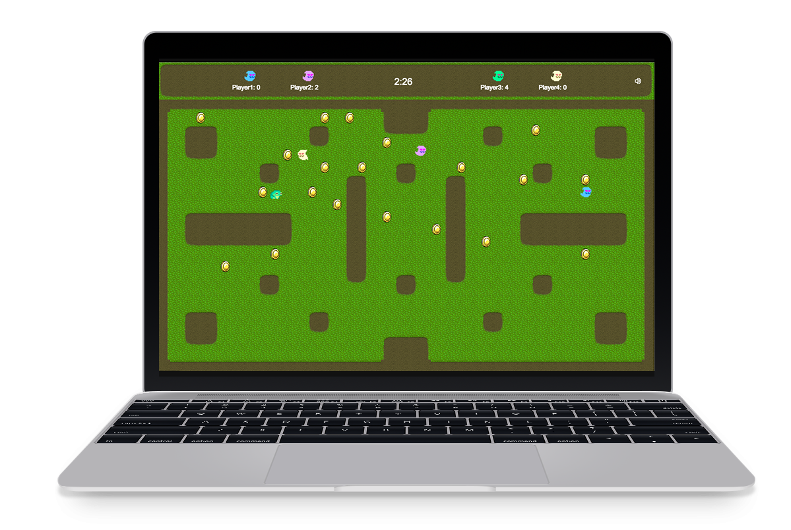

Croaked: A multiplayer game

Croaked is a multiplayer networked online game, inspired by Pacman and Crawl.
The game can 1 - 4 players, the remaining players are controlled using artificial intelligence.
When a game is started one player is the hero, whose mission is to collect as many coins as possible before time runs out. The other players are ghosts who aim to catch the hero.
Once a ghost catches the hero, they become the hero and can now start collecting coins and gaining points. The winner is the player with the most points at the end of the game.
There are mystery power ups and power downs along the way - which may temporarily double or half points gained or the speed you can move at.
I worked with a friend to build the game using Node and Socket.io on the server-side, with Javascript and Phaser on the client-side.
Check out the project on GitHub